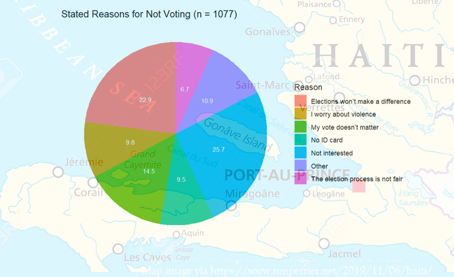

Catherine Moez, PhD
Recent Papers

Introduction
I am a recent political science graduate (PhD 2024), most recently working as a postdoctoral research fellow at the Centre for the Politics of Feelings at Royal Holloway, University of London (Feb. 2024 - Aug. 2025). Please feel free to contact me at catherine.moez[at]alumni.utoronto.ca.
I am interested in quantitative research methodologies, especially with 'unstructured' text and audio data. Substantively, I am interested in why and how political discontentment develops.
As a primary focus in this research program, I use quantitative techniques to explore how politicians of different types (mainstream, anti-establishment) speak and how audiences react. I primarily engage with 'Anglosphere' countries but have worked with French, Irish, and Spanish language data, as well.
Recent Updates
May 2025: Mapping in R


I've recently started working with maps data in R. For local authority lists and election results (currently covering England and Wales local elections from 2021 to May 2025), see my Github folder UK Local Authority Districts. The list may be helpful if you are using the ONS shapefiles for local authority districts.
January 2025: Irish language and other text analysis resources
I have created a wordlist of over 20,000 Irish words to facilitate detecting and isolating Irish text in your documents. This may be helpful for political speeches that switch between English and Irish. See the full list and methods details at Irish Language Resources. The list includes English translations and a corpus count from the past 20 years of the Irish Dáil.
See more text analysis resources (e.g., translations of existing lexicons) at my Github.
November 2024: My PhD dissertation
My thesis, Political Disaffection and the Decline of the Centre: Quantitative Text Analysis Approaches, is now available on the university's repository. It tracks how content and style in political speech have evolved for mainstream and unconventional speakers since the 1990s in the UK, as well as in Canada, Australia, and Ireland.
March 2024: Image research

Visual image data: I have started working with MEXCA and other image analysis tools. Please feel free to reach out to collaborate/discuss.
Other parliamentary data
Britain: Voting records for the 2019-2024 parliamentary session (House of Commons) are not available in full via The Public Whip, which has all other sessions since 1997. I have assembled all the divisions from the 2019-2024 House from the UK Parliament website, and compiled this into a spreadsheet. Please contact me if you would like access to this.
Australia: Australian MPs' party affiliations 2006-2024. Sourced from OpenAustralia.org for currently serving MPs and Wikipedia scraping (former MPs). March 28, 2024. I also have lists of 'soft' vs 'hard' left Australian Labor MPs I am developing -- please contact if interested.
Canada: Conservative MPs' party affiliations 1980-2022, covering pre- and post-merger of conservative parties in 2003. May be helpful for ideological sorting of MPs on the right.
Contact
You can reach me at catherine.moez[@]rhul.ac.uk (To mid-October 2025) or catherine.moez[@]alumni.utoronto.ca (permanent email).
Site © 2023-present. Last updated September 2025.